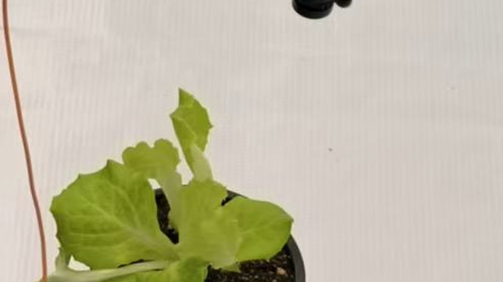

1号棚 · 巡检中
台位 7/16
已检 42/64 株 · 预计 1 分 40 秒完成
78%
11.6 V · 33 Wh
速度
0.5 m/s
WiFi
-52 dBm
里程
18.6 m
已检出
6 株
本棚进度
66%（42/64）
B2-03 · 第 7/16 台位
实时航线
S 形折返 · 20 个停靠位
已走
规划
当前
最近结果
链路28 ms
电量78%温度32 ℃
手动控车 巡检锁定
远程模式可操控
v=0.00 m/s w=0.00 rad/s
拖动发送 v/w · 松手自动停车 · 2.4G 遥控器可随时接管
速度上限
0.30 m/s
0.1
0.8
2.4G 遥控器优先
失联 500 ms 停车
急停硬件优先
低码率图传监看
默认关闭，开启后仅传低码率画面
车端图传
默认关闭
演示画面
识别在车端 K230 完成，不上传原始视频；本页为低码率监看，仅用于演示与远程接管

本帧检测2 个目标
云台预设
当前俯仰 78°
图传说明
- 默认关闭，开启后仅传低码率画面
- 识别与判定在车端完成，不依赖视频流
- 断网自动停传，恢复后可重连
1号棚 已完成
2026-11-04 09:20—09:26
有结论率 84.4%
建议采纳 6/9
六状态分布共 9 株
病害记录共 3 条
待复核共 3 条 · 低置信